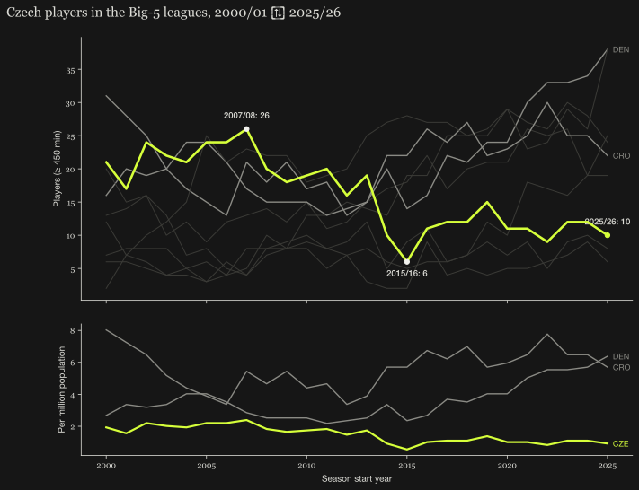
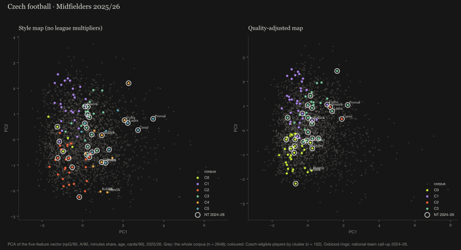

Player Pool Atlas · football · first edition · 2026/27 · 19 leagues · 7 seasons · 163 tests
When did the train leave, and where does it stop
The same question as the hockey atlas, asked of football with a better corpus: how deep is the Czech pool per head, where does the pathway abroad leak, what is the World Cup squad made of, and what do Norway and Denmark do that Czechia does not. Czechia is the worked example. The pipeline takes a nationality code and a peer set.
- players in Europe's top-9 leagues, per million
- 2.39 seventh of nine · Denmark 12.58
- Czech players in the Big-5, ≥ 450 min
- 26 → 6 → 10 2007/08 · 2015/16 · 2025/26
- U21 share of domestic minutes
- 6.4 % Denmark 15.3 %
- World Cup 2026 squad in the top-9 leagues
- 35 % Switzerland 88 % · Norway 65 %
The atlas maps every Czech professional FBref knows about, 440 players, 192 of them with a full 2025/26 season in one of nineteen leagues, and reads the pool the way a federation would want to: against peers, per head, along the pathway abroad, and at the moment a tournament squad is named1. No predictions, no selection advice. Every number on the page is computed from the run and the build refuses to render a sentence its data no longer supports; there are 163 tests and a ledger of 23 rulings behind it.
Is the pool thin?
Count the distinct players with at least 450 minutes on a 2025/26 roster in the nine strongest European leagues, divide by population. Czechia has 26, which is 2.39 per million23.
Seventh of nine. Denmark, with half the population, has five times the density; Slovakia, again, is ahead. The largest cohort gap is midfielders aged 23 to 25: two Czech players in the top-9 leagues against a peer median of six. Defenders under 22: none, against a peer median of 1.51.
| group | cohort | CZE | peer median |
|---|---|---|---|
| Midfielders | 23–25 | 2 | 6 |
| Midfielders | 26–29 | 3 | 6 |
| Midfielders | 30+ | 1 | 3.5 |
| Defenders | 26–29 | 3 | 4.5 |
| Defenders | U22 | 0 | 1.5 |
Where the pathway leaks
Three numbers along the road from a Czech academy to a top-9 roster. Minutes at home: players aged 21 or younger get 6.4 % of all minutes in the Czech First League; in Denmark 15.3 %, Hungary 14.1 %, Croatia 14.0 %, Norway 11.5 %1. Where they go: 27 of the 192 mapped players play abroad; 63 % of them in a top-9 league, but 19 % moved sideways, to a league no stronger than the Czech one by the multiplier4. How they fare: Czech exports keep a median 50 % of their club's minutes, third of nine countries of origin, behind Slovakia (76 %) and Hungary (57 %) and ahead of Denmark (46 %) and Norway (37 %). Fewer leave; the ones who do, play.
And the squad. Of the 26 players named for the 2026 FIFA World Cup, 35 % play in the nine strongest leagues. Switzerland's squad: 88 %. Croatia 73 %, Austria 69 %, Norway 65 %5.
When the train left
Count Czech players with at least 450 minutes in the Big-5 leagues, every season since 2000/01. The peak is 26 in 2007/08 (the most-minutes names that season: Drobný, Plašil, Kučera; in 2002/03 Čech, Koller, Jarolím). The trough is 6 in 2015/16. The current figure is 10. Denmark is at 38 and Croatia at 24, both on a rising line6.

This is presence, not quality: goalkeepers count, a lineup of who was there. But it dates the problem. The decline is not recent and it is not a blip; it is a fifteen-year line with a floor in it.
How Norway and Denmark do it
The same six numbers, same definitions, same seasons. A comparison, not a causal claim.
| metric | CZE | NOR | DEN |
|---|---|---|---|
| players per million, top-9 leagues | 2.39 | 9.37 | 12.58 |
| U21 share of domestic minutes | 6.4 % | 11.5 % | 15.3 % |
| export age, recent (median) | 22 | 22 | 22 |
| sideways moves | 19 % | 22 % | 10 % |
| exports' club-minutes share | 50 % | 37 % | 46 % |
| World Cup squad in the top-9 leagues | 35 % | 65 % | — |
| Big-5 players now | 10 | 25 | 38 |
The export age is the same everywhere, 22. What differs is what happens before it (minutes at home) and what the export leads to (a top-9 roster, or a sideways move). Norway gives its under-21s twice the domestic minutes and sends 65 % of its squad to the top nine; Denmark gives them two and a half times the minutes and loses a tenth of its exports sideways against Czechia's fifth.
The map, and how it is kept honest
Every player-season is one five-feature vector, identical across all nineteen leagues because only the basic table exists for all of them: non-penalty goals and assists per 90, share of club minutes, age, cards per 90. Rates for players with few minutes are shrunk towards the median of their league and season with \(K = 10\) phantom matches, \(\hat r = (\text{events} + K\cdot 90\,\tilde r)/(\text{minutes} + K\cdot 90)\); at the 450-minute floor the league median carries 67 % of the weight, at 900 minutes the player and the median weigh the same4. PCA to two components, K-means, drawn twice: a style map on raw rates and a quality map with the league multiplier applied first.

The multipliers are UEFA association coefficients, current five-year ranking, normalised to the strongest league (Premier League 1.000, Serie A 0.856, Bundesliga 0.788, Czech First League 0.434, Slovak Super Liga 0.217); second tiers at 0.6 of their country's first tier, a stated assumption7. ClubElo was the plan and was unreachable at run time, which the atlas says rather than hides. So each multiplier was perturbed ±20 % on its own and all of them together, 41 scenarios; 37 change nobody in the union of the three position groups' top tens, and the largest churn is one player, on the Czech league's own multiplier4.
The data-quality log is on the page, with counts: 92 women's entries dropped from FBref's country page by surname (the rule and its limits are stated), 2 namesakes disambiguated by club, 125 professionals in leagues without season tables listed by name only, 441 split-season rows collapsed after mid-season transfers, 18 call-up names that match no row8. Every wrangling decision that changed a count, with the count.
How it was built
A written design spec, an implementation plan of small tasks, a fresh coding agent per task, a spec-compliance and code-quality review after each, a whole-branch review at the end, and every decision the controller took without me written down as a dated ruling: 23 of them for the first edition. I wrote the framing, the cluster reads and the rulings; the agents wrote the code under the tests9. The whole thing is one repository: pipeline, models, validation, report, site. From a clean clone, uv sync && make restore-snapshot && make render reproduces the report from the committed snapshot without touching the network9.
The live atlas, with 17 player cards chosen by six stated rules, interactive projections and the Czech edition, is at football.datasimply.eu. A hierarchical Bayesian model next to the multipliers, the goalkeeper layer and a 25-season Czech series with the golden generation are the next edition's spec, not this one's claim.
References
- Šandová, B. (2026): Czech football · Player pool atlas, first edition, 2026/27. Summary, cohort gaps, pathway exhibits, squad composition, peer comparison.
- FBref via soccerdata: player season tables (standard, playing time) for the nine headline leagues, the Czech First League, peer domestic leagues and the German second tier; the "Players from Czechia" country page for pool discovery; the nationality column for peer counts. Season 2025/26 complete; ≥ 450 minutes.
- Eurostat, population estimates 2024 (Czechia 10.9 M); every country counted the same way.
- Šandová, B. (2026): atlas Methodology: league multipliers, Bayesian shrinkage (K = 10 · 900 minutes), PCA loadings per position group, 41-scenario sensitivity table.
- Wikipedia squad tables: 2024–25 Nations League, 2026 FIFA World Cup, 2026 World Cup qualification, UEFA Euro 2024, UEFA European Under-21 Championship 2025; matched on normalised name and birth year; tier = league of the player's most-minutes 2025/26 row.
- FBref Big-5 player tables 2000/01 → 2025/26, players with ≥ 450 minutes, nationality CZE; peers on the same rule.
- UEFA men's association coefficients, current five-year ranking (2022–23 to 2026–27), via Wikipedia; tier-1 multiplier = coefficient / max, tier-2 = 0.6 × tier-1 (assumption). ClubElo unreachable at run time (HTTP error).
- Šandová, B. (2026): atlas data-quality log, 6 recomputed checks and 5 recorded incidents, with counts.
- sandovabarbora/czefootball-player-pool-atlas, MIT. Spec, plan and ledger under
docs/superpowers/; 163 tests; seed 42 for every stochastic step. Portraits: Wikimedia Commons via Wikidata P18, credited in the atlas footer.